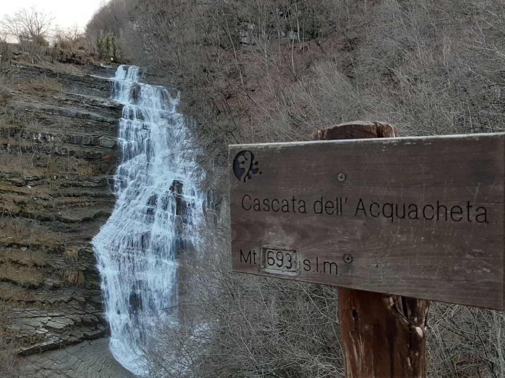

Percorso 4 · Culturale
Il Mugello nella letteratura
Da Dante a Dino Campana, passando per Carducci, attraverso secoli di grandi letterati
A PiediIn BiciCon il Tuo Cane
A Piedi
- Durata
- 5/6 giorni
- Lunghezza
- 128 Km
- Difficoltà
- Difficile
- Dislivello
- 6871 Mt
Traccia (127,6 km)Partenza e arrivo
Porta il percorso con te
Scarica la traccia per il navigatore o per un'app come Komoot, OsmAnd o Wikiloc.
Sentieri e cammini attraversati
- Sentieri CAI
- nr. 1 - nr. 1 A - nr. 36 - nr. 30 - nr. 00 - nr. 713 - nr. 35 - nr. 60 - nr. 20 - nr. 505 - nr. 519 - nr. 411 - nr. 419 - nr. 10
- Cammini
- Cammino di Dante - SOFT 14 - Grande Escursione Appenninica - SOFT 22 - Sentiero delle Foreste Sacre
Descrizione del percorso
Leggi il racconto di Orme del Mugello
San Godenzo (400m), piccolo borgo incastonato tra le colline dell’Alto Mugello, è punto di partenza di questo percorso. Porta d’ingresso del Parco Nazionale delle Foreste Casentinesi, è resa celebre non solo per l’arte culinaria, ma anche per la storia che si cela tra le antiche strutture del paese. Uno di queste è senza dubbio l’Abbazia di San Gaudenzio. Fondata nell'XI secolo dai monaci benedettini, fu consacrata nel 1028 e divenne un centro spirituale e culturale grazie alle donazioni di famiglie nobili, tra cui i Conti Guidi. L'abbazia conserva una struttura imponente con una facciata romanica e un interno a tre navate, con colonne e capitelli scolpiti, alcuni dei quali risalgono a edifici più antichi. La cripta, risalente all'XI secolo, è un esempio dell'architettura originale. L'abbazia è celebre per la sua connessione con Dante, che qui trovò rifugio nel 1302 durante il suo esilio. Si racconta che il paesaggio circostante influenzò alcune descrizioni della Divina Commedia. Inoltre, l'abbazia fu un punto di sosta per pellegrini lungo un’antica via che collegava Firenze alla Romagna. Un episodio famoso è legato alla disputa tra i monaci e i signori locali nel Seicento, che portò alla maledizione dei nemici. Oggi, l'abbazia è una meta di grande valore storico e naturale. Ci lasciamo San Godenzo alle spalle, e dopo una lunga salita si arriva alla vetta di Maestà di Tiziano (909 m). Da qui in poi sarà un altrettanto lunga ma piacevole discesa verso Dicomano (160 m), importante centro per tutto il Mugello.
Si attraversa il ponte sul fiume Sieve, che ne caratterizza i luoghi ed è il più importante corso d’acqua di tutta la valle, e rimanendo a poche centinaia di metri dal suo letto, lo costeggiamo fino ad arrivare a Ponte a Vicchio. Il percorso è gradevole, lungo la vecchia strada Sagginalese. Dal ponte si raggiunge agevolmente il centro di Vicchio, con i suoi antichi edifici e le piazze che ricordano illustri cittadini, vanto per la comunità locale. Poco distante il centro sorge la Villa di Carducci.
La Villa Giarrè Billi (Villa di Carducci), situata nella frazione di Pilarciano, fu un importante rifugio per il poeta Giosuè Carducci tra la fine dell’Ottocento e i primi anni del Novecento. Il poeta, in età matura, frequentava regolarmente la famiglia Giarrè Billi, legato dall’amicizia con la poetessa Marianna Giarrè Billi. Il periodo autunnale, con i suoi colori e il paesaggio suggestivo, era il momento preferito da Carducci per visitare la villa, che divenne un luogo di ispirazione e tranquillità. Il Mugello per Carducci non era solo un rifugio bucolico, ma una vera "seconda patria". Durante i suoi soggiorni, esplorò la vallata, visitando luoghi storici come Vespignano, natale di Giotto. Nel 1895, divenne presidente del comitato per la statua di Giotto a Vicchio, un ruolo che cementò il suo legame con il territorio. Carducci amava passeggiare nelle campagne, dialogare con i contadini e apprezzare la semplicità della vita rurale, che considerava una fonte di energia. La sua predilezione per le persone semplici emergeva anche nei suoi incontri con l'élite culturale, come il conte Pecori Giraldi, ma trovava una forza unica nella genuinità della gente comune. Si passa in prossimità della casa natale di Giotto, meritevole di una visita, dove non solo si rievoca il maestro di pittura, ma è possibile scorgere in lontananza le cime che caratterizzano questa porzione di regione, e tra saliscendi in piena campagna mugellana, si giunge a Borgo San Lorenzo.
Dal più popoloso paese del Mugello, ci spostiamo verso nord, in direzione Ronta. Non lontano dal percorso è possibile trovare dimora La Topaia e la Villa della Casa. La Topaia è una villa storica che ha acquisito un significato speciale grazie al suo legame con la letteratura e le personalità che vi hanno soggiornato. Tra le sue mura risuona ancora la storia d’amore tormentata tra Dino Campana e Sibilla Aleramo, due figure centrali della letteratura italiana del Novecento. La villa, un tempo legata alla nobiltà e all’economia agricola, divenne nel Novecento un ritrovo per intellettuali e artisti. Campana, il poeta di "Canti Orfici", trovò rifugio qui, dove intrecciò una relazione travagliata con Sibilla Aleramo, una scrittrice di spicco. L’amore tra i due fu segnato da passione, crisi e incomprensioni, con momenti drammatici e fughe romantiche. La Topaia fu testimone delle loro conversazioni intense e delle difficoltà del poeta, il cui destino fu segnato dalla sua fragilità mentale. Sibilla Aleramo descrisse in lettere le emozioni vissute in quel periodo, tra la bellezza del paesaggio e l’inquietudine di Campana. Ancora oggi, la villa conserva il fascino di quei giorni, un luogo in cui la poesia e la storia si fondono, ispirando chi vi si avvicina. La Topaia rimane un simbolo senza tempo del legame tra arte, natura e tormento umano.
Villa della Casa è immersa in un paesaggio collinare che ne esalta la bellezza storica e culturale. Questa villa è famosa per essere il luogo natale di Monsignor Giovanni della Casa (1503-1556), autore del celebre Galateo, un’opera che definì le buone maniere e l’etichetta sociale, diventando un punto di riferimento nella cultura del Rinascimento. Giovanni della Casa, noto uomo di chiesa, diplomatico, poeta e scrittore, ha ricoperto importanti ruoli ecclesiastici, tra cui Nunzio Apostolico e Arcivescovo di Benevento. Il Galateo è il suo lavoro più famoso, in cui offre riflessioni sulla società e sui rapporti umani, e il termine "galateo" è diventato sinonimo di buone maniere. Oltre a questa opera, scrisse poesie, lettere e trattati che testimoniano la sua vasta cultura. Nel corso dei secoli, la villa è stata meta di studiosi e intellettuali attratti dalla figura di Giovanni della Casa. Si narra che proprio in questa dimora il giovane autore abbia concepito le idee che portarono alla scrittura del Galateo. Villa della Casa è un elegante edificio che fonde elementi rinascimentali con la tradizione architettonica toscana, immerso in un giardino che offre panorami spettacolari sulle colline circostanti.
Siamo ormai prossimi a Ronta. Nelle immediate vicinanze del borgo si trova Villa Pananti. Villa Pananti prende il nome da Luigi Pananti, poeta e letterato nato nel 1766 a Ronta. Pananti, noto per le sue opere poetiche e i suoi legami con circoli culturali europei, trascorse molto tempo in Inghilterra e si legò a personalità come Lord Byron. La villa fu il centro della sua vita familiare e culturale, frequentata da scrittori e artisti. Pananti si ispirò ai paesaggi del Mugello nelle sue poesie, promuovendo la cultura italiana all'estero. Villa Pananti, con la sua elegante architettura, continua a essere un simbolo della sua eredità culturale. Poco distante dal centro di Ronta troviamo un altro edificio, celebre dimora e luogo d'incontro per poeti, letterati e artisti di rilievo, la Villa di Striano. La Villa di Striano, elegante esempio di architettura rurale toscana, è legata a personalità come Dino Campana, che qui trascorse periodi della sua vita. Il poeta, autore dei Canti Orfici, trovò ispirazione nei paesaggi circostanti, componendo versi sotto un grande tiglio nel giardino. La villa ospitò anche Lord Byron, che ne apprezzava la tranquillità. Costruita tra il XVII e XVIII secolo, la villa presenta facciate simmetriche, logge panoramiche e sale affrescate. Al suo interno si trovano una biblioteca storica e una stanza dedicata a Campana, con pannelli che raccontano il suo legame con il luogo.
Lasciamo adesso posti antropizzati per iniziare un contatto autentico con i rigogliosi boschi del Mugello. Lungo il cammino sono presenti svariati punti panoramici dove è possibile avere uno sguardo a 360 gradi in tutta la vallata. Si arriva dunque al Rifugio La Serra (900 m) situato tra il passo della Colla di Casaglia e il Passo del Giogo, non lontano da Badia di Moscheta e dalle cascate del torrente Rovigo. É una piccola costruzione in pietra immersa in boschi di faggio. Il refettorio con caminetto accoglie gli ospiti. É dotato di cucina attrezzata, 10 posti letto e servizio igienico comune con wc e lavandino. Il rifugio è privo di corrente elettrica, ci sono due punti luce in cucina e camerata, alimentate da un impianto fotovoltaico. E’ comunque possibile prendersi una pausa sotto la tettoia di fronte la struttura, oppure accendersi un barbecue sfruttando i bracieri in pietra. Si sale di altitudone ancora un pò, fino a giungere a Giogarello, un piccolo borgo nell'Appennino Tosco-Romagnolo, immerso tra boschi di castagni e querce. Un tempo punto di riferimento per pastori e viandanti, il borgo, oggi tranquillo e parzialmente disabitato, prende il nome da "giogo", indicante il passo montano che univa le vallate circostanti.
Siamo ormai giunti nella Valle dell’Inferno, uno stretto solco chiuso da ripide pareti. Attraversiamo una piccola borgata di nome Casetta di Tiara, e dopo un’ultima salita che ci porta quasi a quota 1000 metri sul livello del mare, iniziamo una lenta e graduale discesa fino a Palazzuolo sul Senio. Il paese si trova lungo il fiume Senio e rappresenta una delle località più suggestive del Mugello, circondata da un paesaggio montano caratterizzato da colline verdeggianti, boschi e antichi sentieri. La sua posizione elevata e l’ambiente naturale lo rendono un luogo ideale per escursioni e passeggiate immersi nella natura. Il borgo ha una lunga tradizione storica e culturale, risalente al periodo medievale. Tra le testimonianze storiche più rilevanti ci sono la chiesa di San Giovanni Battista e il Castello di Palazzuolo, che un tempo era un importante baluardo difensivo della zona. Nel corso dei secoli, Palazzuolo sul Senio ha mantenuto un legame profondo con le tradizioni rurali, legate in particolare alla pastorizia e all’agricoltura. Il paese è anche noto per le sue eccellenze artigianali, tra cui la lavorazione del legno e la produzione di tessuti. Inoltre, ogni anno ospita eventi tradizionali, tra cui feste popolari, mercatini e manifestazioni culturali che celebrano la storia e le tradizioni locali. Palazzuolo sul Senio è un angolo di Toscana ancora autentico, dove natura e cultura si intrecciano armoniosamente.
Da Palazzuolo sul Senio, percorrendo un pezzo di una tappa del Cammino di Dante si giunge a Marradi (320m), paese che ha tra i luoghi di interesse, il Centro Studi Campaniani. Il Centro Studi Campaniani si trova nel cuore di Marradi, il paese natale del celebre poeta Dino Campana, autore dei Canti Orfici. Situato all’interno del Palazzo Torriani, lungo la storica via principale del borgo, il centro è una tappa imprescindibile per chi desidera approfondire la vita e l’opera di uno dei più grandi poeti del Novecento italiano. Fondato nel 1984, il Centro Studi Campaniani rappresenta un faro culturale per il territorio e una risorsa fondamentale per studiosi, appassionati e turisti che desiderano conoscere meglio l’intensa e tormentata figura del poeta. Il Centro ospita una ricca collezione di materiali legati a Dino Campana. Tra i reperti di maggior rilievo si possono ammirare come manoscritti originali e documenti autografi del poeta, inclusi appunti che offrono uno spaccato sulla sua creazione letteraria, edizioni rare dei Canti Orfici e altre opere, compresi testi stampati durante la sua vita, corrispondenze epistolari, tra cui le lettere scambiate con Sibilla Aleramo, che documentano la complessa e appassionata relazione tra i due e fotografie storiche di Campana, dei luoghi a lui cari e del contesto in cui visse. Il centro è anche dotato di una biblioteca specializzata, che comprende studi critici, saggi e opere dedicate al poeta e al contesto culturale dell’epoca. Vi si trovano inoltre strumenti multimediali che permettono di esplorare in modo interattivo la vita e le opere di Campana. Un elemento che rende il Centro particolarmente suggestivo è la presenza del “facsimile del manoscritto smarrito” dei Canti Orfici. Questo documento fu consegnato da Campana al famoso critico letterario Giovanni Papini, ma andò perduto, generando un alone di mistero che ancora oggi circonda l’opera. La vicenda contribuì a consolidare la fama di Campana come poeta “maledetto”, incompreso nel suo tempo. Un’altra curiosità è legata alla ricostruzione dei rapporti tra Campana e Marradi, il paese natale che il poeta lasciò spesso a causa dei suoi tormenti personali e delle difficoltà relazionali. Il centro offre una chiave di lettura per comprendere il profondo legame, a volte conflittuale, che Campana ebbe con questo territorio.
Ci lasciamo alle spalle Marradi e riprendiamo il sentiero in direzione San Godenzo, meta del percorso. Il cammino è ora in salita. Dopo pochi chilometri si giunge all’Eremo di Gamogna (790 m) un antico eremo situato nel comune di San Godenzo, nel cuore del Parco Nazionale delle Foreste Casentinesi, Monte Falterona e Campigna. Il luogo è conosciuto per la sua bellezza paesaggistica e il forte significato spirituale, essendo stato per secoli un rifugio per eremiti e monaci.
L'eremo si trova a circa 700 metri di altitudine, immerso in un ambiente naturale incontaminato, circondato da boschi di faggi e castagni. La sua storia risale al Medioevo, quando divenne un centro di meditazione e preghiera per i monaci, ed è ancora oggi meta di pellegrinaggi e cammini spirituali. L’edificio principale, un antico convento, è caratterizzato da una struttura semplice ma suggestiva, con una chiesa che ospita numerosi affreschi e opere artistiche di interesse storico.
Oltre al suo valore religioso, l’Eremo di Gamogna è anche un punto di partenza per numerosi sentieri escursionistici che permettono di esplorare la bellezza del Parco delle Foreste Casentinesi, un'area di grande rilevanza naturalistica. L’eremo è anche famoso per l'ospitalità riservata ai visitatori, che possono trascorrere del tempo in tranquillità, immersi nella natura.
Superato l’Eremo di Gamogna si raggiunge dopo poco meno di 15 km di sentiero, la famosa. Cascata dell’Acquacheta, citata da Dante Alighieri nel XIV Canto dell’Inferno. L’Acquacheta si distingue per il suo salto d’acqua di circa 90 metri, che si getta con fragore tra le rocce modellate dall’erosione millenaria. Durante le stagioni più piovose, la cascata mostra tutta la sua imponenza, con un flusso d’acqua abbondante che crea giochi di luce e suoni suggestivi. Il paesaggio circostante è caratterizzato da una rigogliosa vegetazione, con sentieri che permettono escursioni di varie difficoltà, offrendo viste panoramiche uniche. Nelle immediate vicinanze si trova anche una piccola cascata sotto i Romiti, meno conosciuta ma molto suggestiva, che arricchisce ulteriormente il fascino del luogo. Il nome "Acquacheta" deriva dalla caratteristica peculiare del fiume che, prima di gettarsi nella cascata, scorre placido e silenzioso per poi precipitare fragorosamente nel salto principale. Questo contrasto tra quiete e impetuosità ha affascinato nei secoli viaggiatori, poeti e artisti, che hanno trovato ispirazione nella sua bellezza. Superata la cascata si arriva a Castagneto (580 m).
Casetta di Tiara
La storia di Casetta di Tiara è profondamente legata alla sua collocazione geografica. Nel Medioevo, il borgo si trovava lungo un importante tracciato di transumanza e di scambi tra le due regioni, e la sua economia si basava principalmente sulla pastorizia e sull’agricoltura. Nei pressi del torrente Rovigo, si possono ancora trovare vecchi mulini e resti di carbonaie, testimonianze di antichi mestieri. Un aneddoto curioso riguarda invece una tradizione popolare legata al Natale: fino agli anni ’50, gli abitanti si riunivano attorno al grande ceppo ardente nel camino della casa più grande del borgo, cantando e raccontando storie fino all’alba, in una celebrazione collettiva che simboleggiava l’unione della comunità
Castagneto
Castagneto è un punto di partenza ideale per gli amanti del trekking e della natura, grazie alla vicinanza con il Parco Nazionale delle Foreste Casentinesi, Monte Falterona e Campigna. La posizione panoramica offre una vista suggestiva sulla valle del torrente Comano. Un legame interessante tra Castagneto e la storia della letteratura italiana si può trovare nella figura di Dino Campana noto per i suoi celebri "Canti Orfici" , spesso vagabondava per le montagne del Mugello e dell’Appennino, trovando ispirazione nella bellezza selvaggia di questi luoghi. Durante l’autunno, i colori della natura si accendono di calde tonalità, rendendo Castagneto un luogo perfetto per passeggiate immerse nel foliage.
Dormire, mangiare e prodotti lungo il percorso
Strutture ricettive (100)
- Agriturismo Borgo Macereto
- Agriturismo Gamberaldi
- Agriturismo Il Belvedere
- Agriturismo La Matteraia
- Agriturismo Le Pozze
- Agriturismo Poggio Bartoli
- Agriturismo Universal Harmony
- Agriturismo Vaiursole
- Al Volo Del Nibbio
- Albergo Ristorante Iolanda
- Area Di Sosta Vecchio Ponte
- Badia Di Moscheta
- BeB ASTIETO
- BeB CA'MINO
- BeB CIRCUIT
- BeB IL BAGARELLO
- BeB IL PITTORE
- BeB KINGA
- BeB LE DUE VOLPI
- BeB MARETTI
- Borgo Di Serignana
- Ca'Mino Di Farneti Mirco
- Casa Torta
- Casale San Giorgio
- Castello Del Monsignore
- Ca’ Nova
- Collecchio
- Donnini
- Fantino
- Fattoria I Ricci
- Fattoria La Topaia
- Fattoria Le Case
- Francini
- Frascole
- Gli Orzali
- Hotel Europa
- Hotel La Rosa
- Hotel Marrani
- I Giardini Di Marcello
- I Monti
- IL BORGO DI VILLA CELLAIA - widespread hotel
- Il Fangaccio
- Il Gallo Birichino
- IL MUGELLO BeB
- Il Muretto
- Il Pino Del Capitano
- Il Podere Di Tullio
- Il Poggio Alle Ville
- Il Villino
- La Casa Di Colle
- La Casina Delle Fate Nel Castellaccio
- La Colombaia
- La Fattoria Del Farneto
- La Germana
- La Serra
- La Spiga
- La Stazione Di Monta
- Le Scalelle
- Le Spiagge
- Lo Sghimbescio
- Locanda Degli Artisti
- Locanda Senio
- MONSIGNOR DELLA CASA COUNTRY RESORT eSPA
- Orticaia Chiesa
- PALAZZO TORRIANI Residenza d'Epoca
- Piano Rosso
- Podere Capitignano
- Podere I Lastri
- Podere La Carbonaia
- Podere Moiata-Fattoria Di Campestri
- Podere Ugolini
- Poggio A Sieve
- Popolano Di Sotto
- Residenza Di Campagna Montelleri
- Rifugio Alpino Casa Al Giogo
- Rifugio Alpino Castellonchio
- Rifugio Escursionistico Badia Moscheta
- RIFUGIO Punto G.E.A.
- Rupecanina
- Santalvico
- Short Term Rental In Borgo San Lorenzo
- Short Term Rental In Dicomano
- Short Term Rental In Marradi
- Short Term Rental In Palazzuolo Sul Senio
- Short Term Rental In San Godenzo
- Short Term Rental In Vicchio
- Sommavilla
- Tenuta Mazzini
- Tertulia coliving
- Tre Fiumi
- Valnera
- Villa Campestri
- Villa Cerreto
- Villa Dalia
- Villa Di Pilarciano
- Villa I Ciliegi
- Villa La Commenda Concordia
- Villa Le Case
- Villa Maltempo
- Villino Le Vigne
Aziende (18)
- Az. Agr. La BeeO Baita
- Azienda Agricola Palazzo Vecchio
- Azienda Agricola Poggio dei Roti
- Bacco del Monte di Elena Bartalucci
- Banco Fiorentino - Filiale di Borgo San Lorenzo
- Banco Fiorentino - Filiale di Luco di Mugello
- Banco Fiorentino - Filiale di Vicchio
- Borgo Macereto
- Farming
- Frascole soc.agr. di Lippi E. Santoni C. e E. s.s.
- Il Poggio alle ville di Raffaele Edlmann
- IncorniciArti
- La Felce e il Mirtillo
- Monsignor della Casa Country Resort e Spa
- Poggio a Sieve - Casa Vacanze
- Rifondazione agricola di Sandra Nerbosi
- Società agricola Il Ponte di Trotta Rocco e Lompi Stefania s.s.
- Tenuta Matteraia
Le strutture rimandano alle schede di Mugello Toscana, le aziende ai loro siti. Sono tutte segnate anche sulla mappa.
Percorso, traccia e testi di Orme del Mugello, pubblicati con il loro permesso.